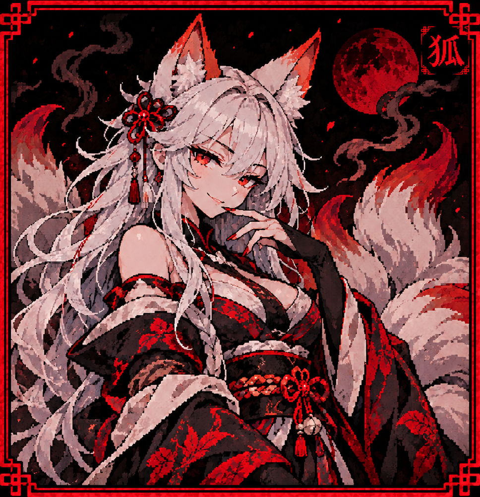
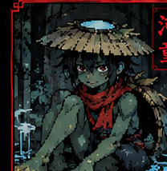
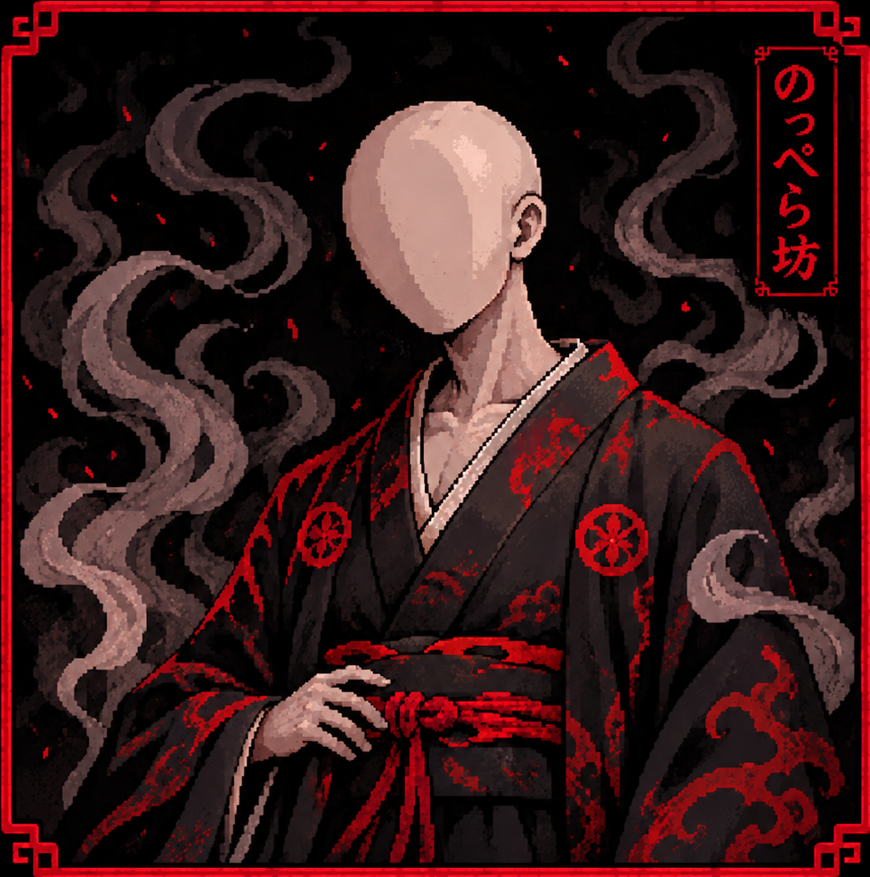
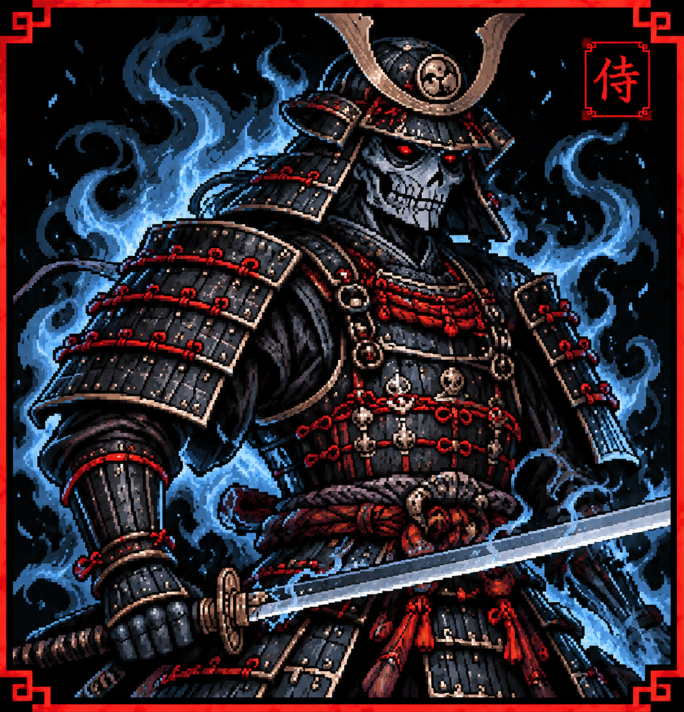
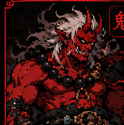
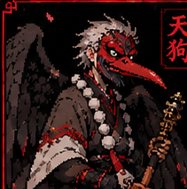
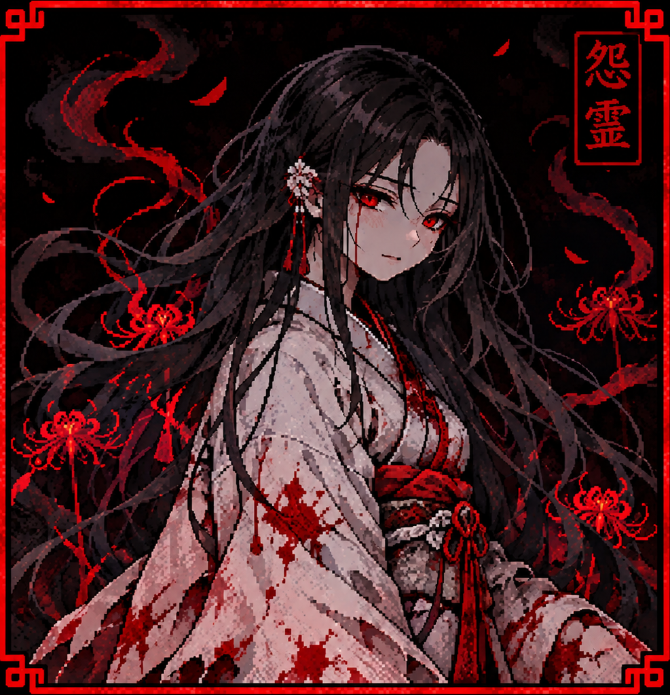

Presentación de estado actual · Android
Entra en la noche.
Conoce tu yokai.
Yokai Infection, un juego donde te invadirán los espíritus yokai.
Índice de la exposición
Cuatro apartados para contar el proyecto.
Cada bloque lleva a un apartado independiente donde el integrante correspondiente podrá desarrollar su parte y añadir su vídeo o GIF.
01 / ACCESO
Introducción, diseño y acceso
Vídeo introductorio, estética, login, registro, música y partículas.
02 / DATOS
Base de datos y usuarios
Persistencia local, usuarios, migración y protección de contraseñas.
03 / CATÁLOGO
Modelo y catálogo de yokai
Modelo, datos iniciales, SQLite, RecyclerView y tarjetas.
04 / RECORRIDO
Navegación, ficha y estado actual
Transición, selección, ficha y situación actual de la partida.
01 Acceso→
02 Datos→
03 Catálogo→
04 Recorrido
Apartados independientes
Cuatro voces, una historia técnica.
Cada integrante tiene su propio espacio para añadir el texto de su exposición y el vídeo o GIF correspondiente.
01 · Integrante 1
Introducción, diseño y acceso
Vídeo introductorio, estética pixel japonesa, login, registro, música ambiental y partículas rojas.
Texto del expositor
Añadir aquí el texto de la exposición.
IntroActivityMainActivityRedParticlesViewactivity_intro.xmlyactivity_main.xml
Vídeo / GIF del apartado 1Añadir archivo multimedia aquí
02 · Integrante 2
Base de datos y usuarios
SQLite local, tablas de usuarios y personajes, migración y protección de contraseñas.
Texto del expositor
Añadir aquí el texto de la exposición.
UserDatabaseHelperonCreate()yonUpgrade()- PBKDF2 y sal aleatoria
- Migración desde
SharedPreferences
Vídeo / GIF del apartado 2Añadir archivo multimedia aquí
03 · Integrante 3
Modelo y catálogo de yokai
Los diez personajes iniciales se modelan, se guardan en SQLite y se muestran en una cuadrícula.
Texto del expositor
Añadir aquí el texto de la exposición.
YokaiCharacteryDatosCharacterAdapterRecyclerViewcon dos columnas- Recursos
drawable
Vídeo / GIF del apartado 3Añadir archivo multimedia aquí
Demo visual
Los recursos reales ya cuentan la historia.
Ficha de ejemplo

Akira Kage
La app transmite a esta pantalla el nombre, tipo, lore e imagen seleccionados desde la cuadrícula.
Volver al índiceCatálogo visual disponible

Akira Kage
GenzoHana

Katsuro
Kuro
RaizenRen

ShioriYuki
Mizuchi
Equipo
Las personas detrás de Yokai Infection.
Juan Guillermo Domínguez Guzmán
@JGdg9Añadir foto
Alberto Martínez Carrasco
@AlbertoMC2401Añadir foto